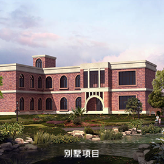
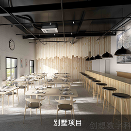
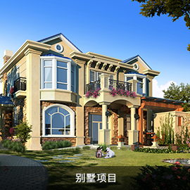
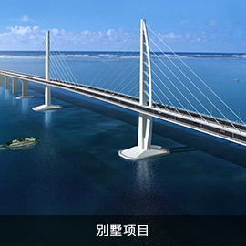
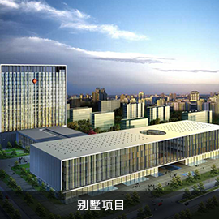
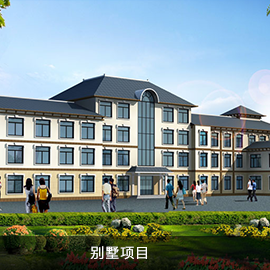
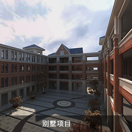
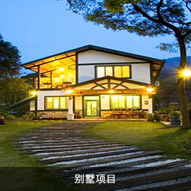

邢燕丽
工程师担任多个项目负责人
关注 ： 12222
评标专家
24年工作经验
24年工作经验
24年工作经验
24年工作经验
姓名 : 邢燕丽
学历 : 本科
职称 : 硕士生导师
地区 : 北京
工作年限 : 24年
注册专业 : 一级注册结构工程师
-
简介 :
硕士生导师
北京市评标专家
军队评标专家等
个人作品展示
- 
- 
- 
- 
- 
- 
- 
- 
工作经历
- 1983年8月—2004年8月， 北京市农林科学院图书馆
- 1998年1月—2004年8月， 北京市农林科学院图书馆馆长
- 2004年9月—现在， 北京农学院图书馆信息咨询部主任，研究馆员
- 2012年1月—现在， 北京农学院计算机与信息工程学院硕士研究生导师
主要业绩
- 2007年6月—现在 北京市评标专家
- 2011年1月—现在 财政部评标专家
- 2015年7月—现在 军队物资采购评审专家
- 2015年8月—现在 北京市科委项目评审专家库专家
- 2010年1月—现在 中国农业科学院研究生院硕士论文评审专家
获奖状况
- 1、作为主持人、执行人和技术骨干，承担过多项科技部、北京市科委、北京市自然科学基金课题和北京市教委项目的研究工作，其中科技部项目“农业科技基础数据信息系统建设与共享服务”获北京市科学技术进步二等奖。
- 2、完成的科研项目有：科技部项目1项：农业科技基础数据信息系统建设与共享服务（获北京市科学技术二等奖）。北京市自然科学基金项目1项：档案库系统及信息网站建设。北京市科委项目5项：网络环境下科技成果档案信息开发与利用研究；北京市农业电子图书馆建设（一期）；北京市农业科技信息资源的开发和利用（一期）；北京市农业科技信息资源及远程信息服务示范建设；北京农村数字信息资源中心建设。北京市教委项目2项：北京市农业信息共享中心研究与建设；基于GIS的文献信息管理应用研究等。
- 3、主编、撰写论著3部，发表论文50余篇。
关于我们
企业服务
联系我们
帮助中心
网站导航
Copyright2016 梧桐时代科技有限责任公司 . 京ICP 证 17016004 号
通讯地址：北京市大兴区亦庄县小羊坊康碱路 6 号
 材料
材料